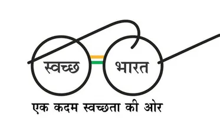
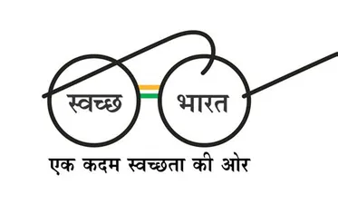

Welcome to our land management and resources website for India! We have compiled a list of helpful resources
to assist you in managing your land and natural resources sustainably and responsibly in India.
-
National Bank
for
Agriculture and Rural Development (NABARD) -
NABARD provides financial assistance and other resources to farmers and rural communities for
agriculture and rural development. Their website offers resources on sustainable agriculture,
watershed
management, and climate change adaptation.
-
Indian Council
of
Forestry Research and Education (ICFRE) - ICFRE is a premier research organization for
forestry research in India. Their website offers resources on forest management, research
publications,
and forestry education.
-
Indian Institute
of
Soil Science (IISS) IISS is a research institute focused on soil science and land
management
in India. Their website offers resources on soil health management, land degradation, and
sustainable
agriculture practices.
-
National
Agroforestry Policy - The National Agroforestry Policy was introduced by the Ministry of
Agriculture and Farmers' Welfare in 2014 to promote agroforestry practices in India. Their website
offers resources on agroforestry practices, research, and case studies.
-
Indian Society
of
Agroforestry -The Indian Society of Agroforestry is a professional society focused on
promoting agroforestry practices in India. Their website offers resources on agroforestry research,
education, and extension services.
-
National
Biodiversity Authority (NBA) - NBA is a government agency responsible for implementing
India's biodiversity laws and regulations. Their website offers resources on biodiversity
conservation,
access and benefit sharing, and biodiversity management.
-
Indian Council
of
Agricultural Research (ICAR)-ICAR is the apex body for coordinating, guiding, and
managing
research and education in agriculture in India. Their website offers resources on sustainable
agriculture practices, research publications, and extension services.
-
Indian Society
of
Soil Science-The Indian Society of Soil Science is a professional society focused on
promoting soil science research and education in India. Their website offers resources on soil
health
management, soil conservation, and sustainable land management practices.
Schemes Implemented By Govt
We hope you find these resources helpful in managing your land and natural resources sustainably and
responsibly in India.
 
